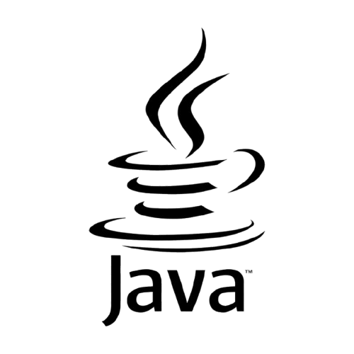
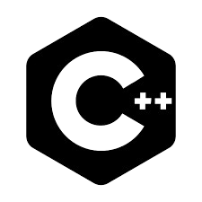

Hard Skills
Java
De nombreux projets et un semestre entier passé dessus. C'est le langage dans lequel je suis le plus avancé. Je suis également en train d'apprendre à coder pour Android en Java.
JDBC

Pendant tout mon troisième semestre, j'ai eu des cours sur le langage JDBC ce qui m'a permis de l'appréhender et de l'appliquer à des bases de données.
SQL (Oracle, JDBC, MySQL)

J'ai appris le SQL au lycée en spécialité NSI, j'ai également approfondi mes connaissances dans ce langage à l'IUT. J'ai déjà réalisé quelques projets avec ce langage. Et j'ai pu le pratiquer durant les cours de SQL les trois premiers semestres.
PHP

Pendant tout mon troisième semestre, j'ai eu des cours sur le langage php ce qui m'a permis de l'appréhender et de l'appliquer pour créer des sites web et effectuer des requêtes sur bases de données.
JavaScript

Je suis actuellement en train de l'apprendre durant mon quatrième semestre, je n'ai donc pas encore de véritable éxperience en javascript.
Python

C'est le premier véritable langage informatique que j'ai appris. J'ai eu l'occasion de l'apprendre au lycée en spécialité NSI. J'ai également eu l'occasion de le réutiliser dans différents cours de mathématiques et pour un projet combiné avec le SQL.
C++
C'est le premier langage que j'ai appris à l'IUT. C'est le langage qui m'a appris les bases après python (qui est plus haut niveau). J'en ai fait pendant tout mon premier semestre et j'ai pu faire un projet complet avec.
Soft Skills
Rigoureux

Je fais preuve de rigueur en m'assurant que chaque tâche est réalisée avec précision et méthode. J'accorde une grande importance aux détails, au respect des consignes, ce qui me permet de produire un travail de qualité.
Curieux
J’ai une soif constante d’apprendre et de découvrir de nouvelles choses. J’aime explorer, rechercher des informations et approfondir mes connaissances sur des sujets variés. Cette curiosité me permet de m’adapter rapidement et de développer de nouvelles compétences.
Autonome
J’aime prendre des initiatives et avancer de manière efficace sans attendre des directives constantes. Je sais organiser mon travail, résoudre les problèmes par moi-même et m’adapter aux situations nouvelles avec proactivité.
Certifications & Autres
Permis de conduire
Je suis titulaire du permis de conduire depuis août 2023. Je suis capable de me déplacer facilement, indépendamment des transports.
Certification Voltaire
Je possède la Certification Voltaire de niveau professionnel, attestant de ma maîtrise de l’orthographe et de la grammaire française. Cette certification me permet de garantir un niveau d’expression écrit précis et soigné dans un cadre professionnel.
Certification Pix

Je possède la certification Pix, attestant de mes compétences numériques dans divers domaines tels que la recherche d’information, la cybersécurité, la programmation et la communication en ligne. Cette certification démontre ma capacité à évoluer efficacement dans un environnement numérique professionnel.